비서-1급 (2015-11-22 기출문제)
1과목: 비서실무
1. 비서에게 필요한 역량을 설명한 것 중 가장 올바른 것은?
- 회사 내 체계화되어 있지 않은 파일링 시스템을 구축한다.
- 정형화되어 있는 일이 대부분이므로 순간적인 판단이나 융통성을 발휘하는 것 보다는 궤도에서 벗어나지 않게 일처리를 하는 것이 더 중요하다.
- 업무를 처리하는 데에는 우리의 문화나 규범에 맞도록 업무 기준을 세우도록 한다.
- 조직 내 구조가 점차 슬림화 축소됨으로써 비서의 다기능적 역량이 요구된다.
(정답률: 53%)

2. 전문비서 모임에 참여함으로써 얻는 직접적 이점으로 보기 어려운 것은?
- MENTORING 관계 형성 구축 및 발전
- SEMINAR 참석, 발간물을 통해 성공한 사람들의 전략을 배울 수 있는 기회 획득
- MBO를 통한 비공식 네트워킹 가능
- 기술과 전문직 LICENSE 획득을 위한 기회의 확대
(정답률: 49%)
3. 김영숙비서는 상사가 지시하는 일만 하는 비서가 아니라 상사의 업무에 도움이 되는 것들을 자발적으로 찾아서 하려고 한다. 따라서 신문을 읽을 때도, 뉴스를 들을 때도 또는 거래처 사람과 만났을 때도 업무와 관련 있는 내용을 주의 깊게 보고 정리해둔다. 다음 중 김영숙비서가 자발적으로 비서업무를 수행하는 자세로 가장 적절하지 않은 것은?
- 김영숙비서는 소속 회사 및 관련 비즈니스 분야의 뉴스를 검색하여 내용을 요약한 후 상사에게 제공하였다.
- 김영숙비서는 상사가 2000년 이후 연도별 남녀 고용비율을 알아봐 달라고 하여 통계사이트에 접속하여 조사한 후 엑셀프로그램을 이용한 분석자료를 제공하였다.
- 김영숙비서는 상사가 원하는 사람의 연락처를 어디서나 신속하게 확인할 수 있도록 스마트폰의 앱을 이용하여 명함정리를 하였다.
- 김영숙비서는 상사업무의 효율적인 보좌를 위해 회사의 2년치 주가정보와 재무정보를 분석하여 상사에게 제공하였다.
(정답률: 64%)
4. 국제상사 영업부에 근무하는 나애리는 홍길동 전무의 비서이다. 아래의 상황을 읽고 비서의 업무 처리로 가장 적절한 것은?
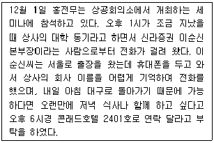
- 상사는 12월 1일 하루 종일 세미나에 참석한 후 저녁 식사까지 있어서 이순신본부장을 만날 수 없다고 판단되어 이순신본부장에게 저녁식사가 어려울 것 같다고 말한다.
- 이순신본부장이 휴대폰이 없는 상황이므로 상사의 핸드폰번호를 알려주고 세미나 끝나는 시간에 연락할 수 있도록 한다.
- 세미나중인 상사에게 문자 메시지를 보내어 이순신본부장으로 부터의 메시지와 호텔번호를 알려준다.
- 상사가 세미나 중이므로 상공회의소 세미나 담당자에게 연락해둔다.
(정답률: 71%)
5. 상사는 스마트폰을 이용하여 업무 효율성을 높이는데 관심이 많아 다양한 스마트폰 앱을 이용한다. 상사는 새로운 앱이 나오면 비서인 내게 사용해 보라며 권하기도 한다. 김영숙비서가 스마트폰을 이용하여 업무 효율성을 높이는 것으로 보기 어려운 것은?
- 상사가 해외 출장 중일 때 스마트 기기를 이용하여 실시간으로 상사의 지시를 받고 업무를 보고하고 있다.
- 비서의 일정관리 프로그램을 상사의 스마트폰에 연동시켜 상사의 일정을 비서의 스마트폰에서 확인 및 추가를 할 수 있도록 설정하였다.
- 건강이 안 좋은 상사가 일주일간 LA로 출장을 가시게 되어 약 복용시간을 알려드리기 위해 시차를 고려하여 예약 문자를 해 두었다.
- 스마트기기를 항상 휴대하기 때문에 메모가 필요할 경우는 스마트기기의 메모 프로그램을 활용하고 있다.
(정답률: 39%)
6. 우리 회사는 미국에 본사를 두고 있는 다국적 기업이라 본사에서 오는 손님이 많은 편이다. 이번에 미국에서 2명의 남자 임원과 1명의 여성임원이 우리 회사를 방문하였다. 외국인 내방객 응대시 비서의 업무자세로 가장 적절한 것은?
- 본사 현관 입구에 환영문구를 적을 때 이름 알파벳 순서로 배치하였다.
- 차 대접을 할 때는 선호하는 차의 종류를 각 손님에게 여쭈어 본 후 내·외부인사의 직급순으로 대접하였다.
- 처음 인사를 할 때는 Mr. Ms. 존칭 뒤에 full name을 넣어 불렀다.
- 처음 인사를 나눈 후에는 친근감의 표시로 first name을 불렀다.
(정답률: 63%)
7. 아래의 항공일정표를 보고 비서의 업무처리가 가장 적절한 것은?
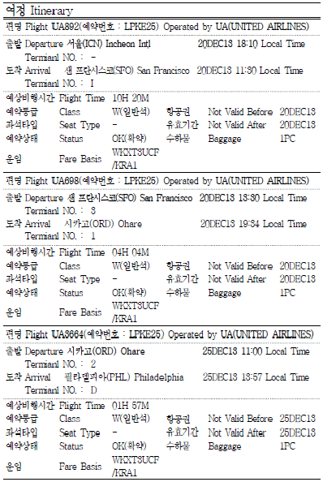
- 출발일에 서울 인천공항에 늦어도 5시 반까지는 도착하도록 일정을 맞추도록 한다.
- 부치는 짐가방은 한국과 미국 각각 1개씩 2개를 넘지 않도록 한다.
- 날짜 변경선을 감안하여 시카고 숙소는 4박으로 예약하여 확인한다.
- 미국 비자를 따로 받을 필요 없이 상사 전자여권으로 ESTA를 작성한다.
(정답률: 43%)
8. 카타르 방문단의 위의 항공일정을 참고하여 비서가 일정확정 및 준비업무를 위해 가장 적절한 것으로만 묶인 것은?(8번 공통지문 문제)
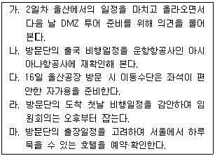
- 가, 다, 마
- 다, 라, 마
- 나, 라
- 나, 마
(정답률: 33%)
9. 사내 첫 방문하는 카타르방문단 내방 일정을 토대로 비서 박미희가 준비해야할 내용으로 가장 부적절한 것을 고르시오.(8번 공통지문 문제)
- 만찬 준비를 위해 사장님께서 VIP방문시 늘 이용하시는 고급 한정식 레스토랑의 룸을 미리 예약해 둔다.
- 서울 도착 당일 인천공항 도착 대합실 앞에 환영 현수막을 준비하도록 한다.
- 현지 비서에게 방문단의 개별 프로필과 가능한 방문자들의 공식 비공식 카타르 활동 이력을 검색하여 내방객 카드를 준비해 둔다.
- 무슬림의 기도 관례를 확인하여 사내와 울산공장에 별도의 공간을 미리 마련해 두도록 조치해 둔다.
(정답률: 54%)
10. 사장님은 9월 1일부터 6일까지 5박 일정의 미국 출장 예정이다. 상사는 전세계적인 체인호텔인 B호텔 ①귀빈층의 ②스위트룸을 선호하여 김영숙비서는 상사의 기호에 맞는 방을 예약하였다. 예약시 ③커머셜요금을 적용받았으며 ④호텔보증금을 상사의 법인신용카드로 결제하였다. 다음 ①~④ 중 올바르지 않은 것은?
- executive floor : 잦은 해외 출장, 바쁜 일정, 복잡한 업무에 시달리는 현대 비즈니스맨들을 위해 보다 신속하고 정확하게 차별화된 서비스와 안락함과 편안함을 제공하는 호텔내의 특별층이다.
- suite room : 복도를 통하지 않고 객실과 객실사이에 전용문이 있는 침실과 응접실이 있는 방이다.
- commercial rate : 할인요금의 일종으로 특정기업체나 사업을 목적으로 하는 비즈니스고객에게 숙박비의 일정한 율을 할인해 주는 것이다. 미국의 도시호텔에서 많이 채택되고 있으며 우리나라 대규모 호텔에서도 이 제도를 실시하고 있다.
- deposit : 호텔 예약 시 숙박자의 신용카드번호와 유효기간을 호텔측에 알려주어 위약금을 물어야 하거나 기물 파손 등의 경우 호텔에서 숙박인에게 청구할 수 있도록 한다.
(정답률: 53%)
11. 다음은 공식 행사에 참석하는 상사를 보좌하는 비서의 업무 내용이다. 가장 적절하지 못한 것은?
- 공식 행사에 초대받은 상사를 위해 드레스코드(dress code)에 맞는 의상이 무엇인지 인터넷으로 검색한 사진을 인쇄해 드렸다.
- 공식 만찬에 초대받은 상사를 위해 주최측에 연락하여 상사의 좌석이 어디인지 확인한 후 보고한다.
- 신원확인 후 출입이 가능하다고 연락을 받은 경우, 늦어도 공식 행사 시작 시간 1시간 전에는 도착하도록 일정을 잡는다.
- 공식만찬 중간에 이동이 가능하지 않으므로 만찬종료 이전에 다른 일정은 잡지 않았다.
(정답률: 68%)
12. 다음 중 보행시 서열의 표기가 바르게 된 것을 고르시오.
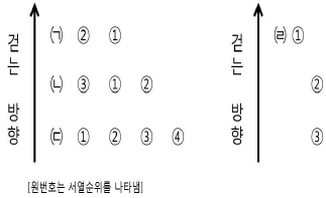
- ㈀, ㈁
- ㈂, ㈃
- ㈁, ㈃
- ㈀, ㈃
(정답률: 48%)
13. 아래 내용의 상사의 지시를 받을 때 비서의 태도로서 가장 적절한 것으로만 묶인 것은?
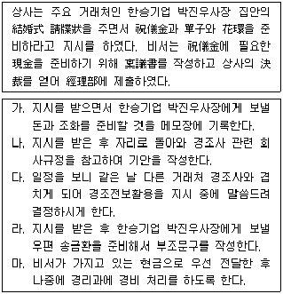
- 가, 나
- 가, 다
- 가, 라
- 가, 마
(정답률: 56%)
14. 윤비서의 상사는 추석이나 설날과 같은 명절에는 중요한 거래관계에 있는 고객이나 친분이 있는 지인들에게 선물을 보내는 것을 중요한 관례로 여기신다. 따라서 윤비서는 매 명절마다 신경써서 처리하는 업무 중 하나이다. 윤비서가 명절선물 발송과 관련한 업무를 처리하는 순서를 가장 효율적이고 올바른 순서로 배열하시오.
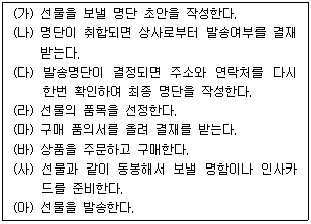
- (가) - (나) - (다) - (라) - (마) - (바) - (사) - (아)
- (가) - (나) - (다) - (마) - (라) - (사) - (바) - (아)
- (마) - (라) - (가) - (나) - (다) - (바) - (사) - (아)
- (마) - (라) - (가) - (나) - (다) - (사) - (바) - (아)
(정답률: 71%)
15. 아래와 같이 상사가 해외출장 중 경험할 수 있는 사고나 사건을 대비하기 위해 비서가 평상시 관심 갖고 있어야 할 내용으로 가장 연관성이 낮은 것을 고르시오.
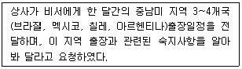
- 신속해외송금지원제도
- 해외여행자보험 보장내역
- 당좌수표 이용법
- 상사의 신용카드 대금 명세표 보관, 관리
(정답률: 43%)
16. 아래의 내용은 비서 커뮤니티에 올라온 글이다. 아래의 상황일 때 비서가 취해야 할 행동으로 적절한 것은?
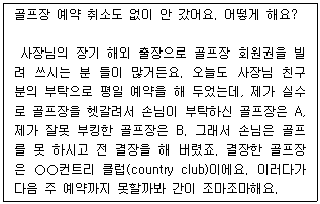
- 회원약관을 찾아서 이럴 경우 어떤 벌칙 사항이 있는지 확인 한 후 비서의 잘못이므로 벌칙 사항을 이행한다.
- 사장님의 친구 분께 연락하여 자신의 잘못에 대해 진심으로 사과한 후 도움을 요청한다.
- 결장으로 인해 위약금을 내야 하는 경우 비서의 잘못이므로 비서가 위약금을 낸다.
- 상사에게 신속히 보고하여 도움을 받을 수 있는 방법을 여쭈어 본다.
(정답률: 64%)
17. 상사의 인적 관계를 파악하고 데이터베이스 프로그램 등을 사용하여 전산화 시키는 상사의 네트워크 관리방법으로 가장 적절한 것은?
- 상사와 공적으로 혹은 사적으로 관련된 인사에 대한 소문 등도 파악하도록 한다.
- 작성한 명부에 대해서는 필요로 하는 부서와 공유할 수 있도록 한다.
- 내부 인사에 대한 정보는 회사 내 인사기록카드를 참고할 수 있으므로 따로 기록하지 않는다.
- 바이어나 고객에 대한 거래실적이나 상담기록은 추후 의사 결정에 도움이 되므로 기록해두도록 한다.
(정답률: 62%)
18. 회의록을 자주 작성하는 양비서는 회의록을 작성하거나 회의 관련 의사소통을 하는데 회의 용어를 숙지하여야 하며 한자와 함께 익혀 두면 뜻을 이해하는 데 더욱 도움이 된다. 다음 중 회의 용어와 의미가 잘 연결되지 않는 것은?
- 動議 : 의결을 얻기 위해 의견을 내는 일, 또는 예정된 안건 이외의 내용을 전체 회의에서 심의하도록 안을 내는 것
- 票決 : 채결에 참석해 의안에 대해 찬성과 반대의 의사 표시를 하는 것
- 定足數 : 회의를 개최하는 데 필요한 최소한의 출석 인원수
- 採決 : 의장이 회의 참석자에게 거수, 기립, 투표(기명, 무기명) 등의 방법으로 의안에 대한 찬성·불찬성을 결정하는 것
(정답률: 36%)
19. 다음은 여행자 수표(T/C) 견본이다. 여행자 수표에 대한 설명으로 바르지 않은 것은?
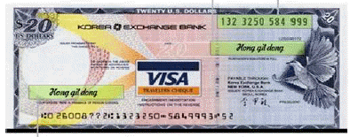
- 여행자수표 구입 시 오른쪽 위의 서명 란에 서명을 하고 현금으로 교환할 때 받는 사람 앞에서 왼쪽 아래에 여권과 동일한 서명을 한다.
- 여행자수표번호(132 3250 584 999)는 분실을 대비해 별도로 기재해둔다.
- 현금으로 교환하기 전에 서명이 모두 되어 있으면 이미 사용된 수표로 간주된다.
- 여행자수표 매입 매도 환율은 현금 매입 매도 환율과 동일하게 적용된다.
(정답률: 51%)
2과목: 경영일반
20. 다음 사례에 대한 해석으로 가장 적절하지 않은 것은?
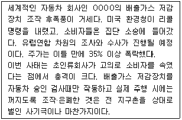
- 초일류기업은 기술력과 함께 도덕성이 생명이다.
- 품질이 아무리 뛰어나도 정직하지 않은 기업은 순식간에 무너질수 있다.
- 고객의 신뢰를 잃으면 기업경영에 많은 타격이 생긴다.
- 법적인 문제는 없으나 기업 윤리 측면에서 문제가 된다.
(정답률: 73%)
21. 미국의 금리인상에 대한 신문기사를 읽은 사람들의 일반적인 생각 중 가장 적절하지 않은 것은?
- “이자율이 오르니까 시중에 유통되는 자금이 줄어들겠네.”
- “전세계의 자금 중 상당 부분이 미국으로 흘러 들어가겠군.”
- “미국이 금리를 올리면 우리는 금리를 내려야 하겠네.”
- “빚을 지고 집을 산 사람들이 고통이 더심해지겠네.”
(정답률: 65%)
22. 기업이 단독으로 해외의 새로운 사업에 진출하는 것이 어려운 경우, 해외기업과 전략적 제휴를 고려할 수 있다. 이때 기업들이 전략적 제휴를 선호하는 이유로 다음 중 가장 적절하지 않은 것은?
- 참여기업들이 지분참여를 통해 공동으로 하나의 새로운 회사를 설립함으로써 현지 정부의 각종 규제를 줄일 수 있다.
- 참여기업들은 투자비용을 줄이면서 기업의 핵심역량을 구축하여 집중화 효과를 볼 수 있다.
- 참여기업들의 자원과 능력을 결합하여 생산, 판매 등에서 규모의 경제를 실현할 수 있다.
- 기업이 이용하기 어려운 해외의 특정자원이나 시장에의 접근이 용이하다.
(정답률: 53%)
23. 다음에서 설명하는 회사의 형태로 가장 적절한 것은?
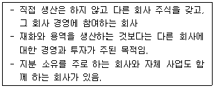
- 합자회사
- 투자회사
- 지주회사
- 주식회사
(정답률: 42%)
24. 다음 중 기업결합방법에 따른 기업형태에 대한 설명으로 가장 적절하지 않은 것은?
- 카르텔은 일정 협약에 따라 이루어지는 기업의 수평적 결합 방식으로 구속력과 공신력이 약하다.
- 신디케이트는 공동판매를 행하는 중앙기관으로 가장 강력한 형태의 카르텔이라 할 수 있다.
- 콘체른에 속한 기업들은 실질적으로 독립성을 상실하게 되지만 외형상으로는 독립성을 유지한다.
- 트러스트는 모기업이 자회사의 주식을 소유하여 자회사의 경영권을 지배하는 지주회사와 관련이 있는 기업결합의 형태이다.
(정답률: 33%)
25. 소자본창업에 대한 관심이 높아지면서 정부에서도 다양한 지원을 하고 있다. 다음 중 소자본창업에 대한 설명으로 가장 적절하지 않은 것은?
- 소자본창업의 업종을 선정할 때 우선적으로 창업자의 적성과 능력에 맞는 업종을 선택해야 한다.
- 소자본창업은 적은 자본으로 기존의 사업성이 분석된 수익성이 보장된 사업을 설립한다.
- 소자본창업은 주로 첨단기술이 필요한 사업으로 위험이 높은 반면 높은 이익을 갖게 된다.
- 소자본창업은 입지선정이 중요하다.
(정답률: 69%)
26. 소유와 경영 분리에 따른 경영체제에서 전문경영인의 대리인 문제가 발생할 수 있다. 다음 중 대리인 문제에 따른 감시비용으로 가장 적절하지 않은 것은?
- 사외이사제도
- 스톡옵션제도
- 잔여손실
- 성과급제도
(정답률: 33%)
27. 기업의 경영관리활동 중 계획화과정에서 다양한 경영전략을 적용한다. 경영전략기법에 대한 다음의 설명 중 가장 적절한 것은?
- SWOT분석은 기업의 외부환경요인과 내부요인에 대한 분석을 기초로 기업의 핵심역량을 파악하는 것이다.
- SWOT분석에서 S(situation)는 경쟁력 유지에 활용할 기업 상황을 의미한다.
- BCG매트릭스는 제품성장률과 기업외적요인인 자금점유율을 기준으로 사업포트폴리오를 평가하는 기법이다.
- BCG매트릭스에서 이상적 기업전략은 '별'에서 발생한 초과자금을 '현금젖소'에 지원하여 안정적 사업단위를 구축하는 것이다.
(정답률: 60%)
28. 다음 중 조직의 형태별 특징에 대한 설명으로 가장 적절하지 않은 것은?
- 사업부제조직은 자원의 효율적 활용으로 규모의 경제를 가져올 수 있다.
- 네트워크조직은 필요한 정보를 중심으로 연결되므로 상황에 따라 변형되며, 필요에 따라 추가되고 제휴되는 특성을 가진다.
- 라인조직은 최고경영자의 명령이 상부에서 하부로 직선적으로 전달되는 조직형태이다.
- 매트릭스조직은 기능부서간 유기적 협조가 이루어져 조직 운영에 도움이 된다.
(정답률: 41%)
29. 다음 중 경영자의 유형에 대한 설명으로 가장 적절하지 않은 것은?
- 중간경영자는 조직 각 부문에 대한 관리책임을 맡는 경영자 군으로 부장, 과장 등이 이에 속한다.
- 소유경영자는 기업의 출자자임과 동시에 경영자인 사람을 말한다.
- 전문경영자는 주주의 이윤을 극대화하기 위해 장기적기업 이익 및 성과에 치중한다.
- 일선(하부)경영자는 일선감독자로서 기술적 능력을 갖추고 사원들의 행위에 대한 관리 책임을 진다.
(정답률: 51%)
30. 지식을 암묵지(Tacit Knowledge)와 형식지(Explicit Knowledge)로 구분할 때 다음 설명중 가장 적절하지 않은 것은?
- 암묵지는 명확하게 보이지는 않지만 경험을 통해 오랫동안 축적된 지식이다.
- 암묵지는 언어로 표현하거나 정리하기가 쉽지 않다.
- 형식지는 보통 언어나 문자로 표현하거나 정리되어 공유된다.
- 형식지는 숨어 있는 '손맛', '솜씨', '노하우' 등을 의미한다.
(정답률: 66%)
31. 구성원의 행동을 유도하는 동기부여이론에 관련한 다음의 설명 중 가장 적절한 것은?
- 허즈버그의 2요인이론에 따르면 임금을 높여줌으로써 종업원에게 만족감을 줄 수 있다.
- 아담스의 공정성이론은 개인이 과다보상을 받았다고 느끼는 경우 자신의 투입을 줄임으로써 공정성을 유지하려 한다는 것이다.
- 매슬로우의 욕구단계론은 인간의 행위에 둘 이상의 욕구가 동시에 작용할 수 있다고 가정하였다.
- 브롬의 기대이론에서 기대감은 자신의 노력으로 어느 정도의 성과를 낼 것인가에 대한 기대를 뜻하는 것이다.
(정답률: 43%)
32. 다음의 리더십 이론에 대한 설명으로 가장 적절하지 않은 것은?
- 허쉬와 블랜차드의 상황이론에서 부하의 성숙도가 매우 높은 경우에는 위임형 리더십스타일이 적합하다.
- 블레이크와 머튼의 관리격자이론은 리더와 부하의 상황에 따라 리더십을 9개의 유형으로 구분하였다.
- 피들러의 상황이론에서 상황의 통제가능성이 아주 높거나 낮은 극단적인 경우에는 과업중심형리더가 적합하다.
- 리더십 특성이론은 리더의 신체적 특성, 성격, 능력 등과 같은 개인적특성에 초점을 두고 있다.
(정답률: 40%)
33. 매장에서 물건을 살펴보고 실제 구매는 인터넷에서 이루어지는 등 온라인과 오프라인을 넘나들면서 구매하는 것이 일반화되고 있다. 이러한 현상으로 인해 온라인과 오프라인 유통경로를 유기적으로 융합하는 유통전략으로 가장 적절한 것은?
- 싱글 채널 전략
- 옴니 채널 전략
- 푸시 전략
- 풀 전략
(정답률: 59%)
34. 다음 중 기업의 복리후생에 대한 설명으로 가장 적절하지 않은 것은?
- 복리후생의 4대보험 중 의료보험과 산업재해보험은 회사가 전액부담하여 근로자 부담은 없다.
- 기업에서 시행하는 일부 복리후생제도는 국가의 입법에 의해 제도화되어 강제적으로 운영되고 있다.
- 복리후생은 기본적으로 조직 구성원 전체 또는 집단에게 지급되는 집단적 보상의 성격을 지니며 다양한 형태로 제공할 수 있다.
- 복리후생은 종업원생활의 안정과 질의 향상을 위해 직접적보상인 임금 외에 부가적으로 지급된다.
(정답률: 50%)
35. 다음 기사의 ( )안에 공통으로 들어갈 용어로 가장 적절한 것은?
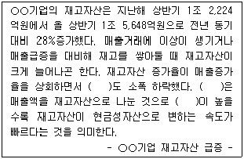
- 매출채권 회전율
- 재고자산 회전율
- 매출액 증가율
- 유동성 비율
(정답률: 50%)
36. 다음 기사의 ( )안에 들어갈 시사용어로 가장 적절한 것은?
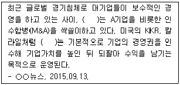
- 사모펀드
- 공모펀드
- 뮤추얼펀드
- 인덱스펀드
(정답률: 50%)
37. 화폐의 액면단위를 낮추는 것으로, 다음 신문기사의 ( )안에 들어갈 가장 적절한 용어는 무엇인가?
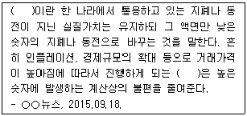
- 인플레이션
- 디플레이션
- 리디노미네이션
- 젠트리피케이션
(정답률: 51%)
38. 기업은 자본공급자로부터 직접자본을 조달하기 위해 주식이나 회사채를 발행한다. 이에 대한 설명으로 가장 적절하지 않은 것은?
- 회사채를 구입한 채권자는 기업의 주요 의사결정에 참여 할 수 없다.
- 우선주는 보통주 취득자보다 기업 의사결정에 대한 투표에서 우선적 권리를 갖게 된다.
- 보통주는 주식 매입시점에서 주주로서의 권리를 갖는다.
- 우선주는 보통주보다 투자의 안전성이 크기때문에 투자자들에게 인기가 있다.
(정답률: 33%)
39. 다음 중 마케팅믹스의 유통경로관리에 대한 설명으로 가장 적절하지 않은 것은?
- 유통경로는 제품이 생산자로부터 소비자에 이를 때까지 거치는 과정이며 이 과정에는 운송업자, 금융기관, 중간상 등이 개입하게 된다.
- 포스(POS)시스템은 주로 경로유형 및 수송방법을 결정하기 위해 이용된다.
- 유통경로관리에 수송방법 및 적정재고를 결정하는 것도 포함된다.
- 유통경로는 대리중간상과 같이 상품에 대한 소유권이전 없이 판매활동만 수행하는 형태도 있다.
(정답률: 44%)
3과목: 사무영어
40. Choose one which is not correct.
- Fringe benefits are main source of salary that some people get from their job.
- A headhunter is an informal name for an employment recruiter, sometimes referred to as executive search.
- Copyright is a form of intellectual property, applicable to certain forms of creative work.
- A subsidiary is a company which is part of a larger and more important company.
(정답률: 27%)
41. Which of the followings is the most grammatically correct sentence?
- For your reference, let me explain China's retail price index.
- If you have look at this first graph, you will notice the high percent of the population using the Internet.
- The employment's rate have peaked at 60% in December.
- This figure is five percentages higher than a month ago.
(정답률: 22%)
42. According to the following memorandum, which one is not true?
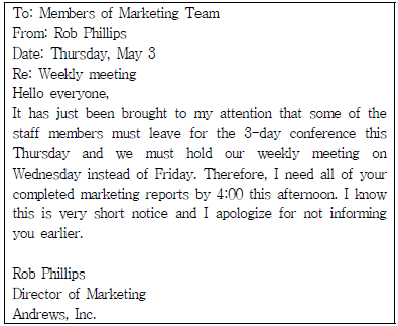
- The recipients of the memorandum work for Marketing Team.
- The weekly meeting will be held on Friday on schedule.
- Mr. Phillips is apologizing because he changed a deadline suddenly.
- It has just brought his attention that some of his staff members can't participate in the weekly meeting on this Friday.
(정답률: 45%)
43. Choose the correct inside address in a business letter.
- Mr. Brian Taylor
TDM Co.
Sales & Marketing Director
11 Main Street
Grand Plains, NY 21596 - Mr. Brian Taylor
Sales & Marketing Director
TDM Co.
11 Main Street
Grand Plains, NY 21596 - Dear Mr. Brian Taylor
11 Main Street
Grand Plains, NY 21596
TDM Co.
Sales & Marketing Director - Mr. Brian Taylor/TDM Co.
Sales & Marketing Director
11 Main Street
Grand Plains, NY 21596
(정답률: 51%)
44. Choose the appropriate order of sentence(s) to make a letter.
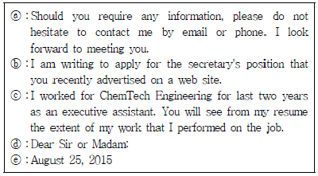
- ⓔ-ⓓ-ⓐ-ⓒ-ⓑ
- ⓓ-ⓐ-ⓒ-ⓑ-ⓔ
- ⓔ-ⓓ-ⓑ-ⓒ-ⓐ
- ⓓ-ⓑ-ⓐ-ⓒ-ⓔ
(정답률: 52%)
45. Choose the most appropriate answer for the blank.
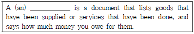
- letter of recommendation
- application form
- invoice
- income statement
(정답률: 50%)
46. Choose the incorrect replacement of the underlined word(s).
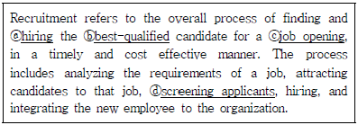
- ⓐ hiring → employing
- ⓑ best-qualified → most suitable
- ⓒ job opening → vacant position
- ⓓ screening applicants → making videos of applicants
(정답률: 35%)
47. Choose the English expression which is not matching with the Korean part.
- 각 프레젠테이션에 대해 10분의 질문 시간이 주어집니다.
10 minutes of question time is allocated for each presentation. - 오늘 발표자를 한 사람씩 소개하겠습니다.
Let me introduce today's presenters to you one by one. - 다음 중요사항을 다시 짚어보겠습니다.
Let me just run over the key points again. - 저 사항은 제가 프레젠테이션 끝날 때 말씀드리겠습니다.
That brings me to the end of my presentation.
(정답률: 53%)
48. Read the reservation form and choose one which is not true to it.
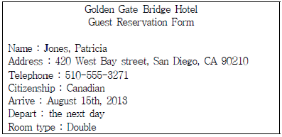
- The guest lives in the States.
- Ms. Jones' nationality is Canadian.
- The guest is staying one night.
- The reserved room has two single beds.
(정답률: 56%)
49. According to the conversation, what is the secretary going to do right after this conversation?
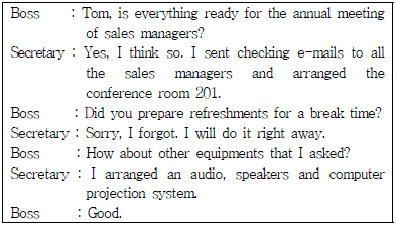
- Secretary will send e-mails to confirm the numbers of participants.
- Secretary will prepare drinks and some snacks for the meeting.
- Secretary will arrange audio-visual equipments.
- Secretary will have a break time for the next meeting.
(정답률: 53%)
50. Choose the one that is the least appropriate phrase for the following blank ⓐ.
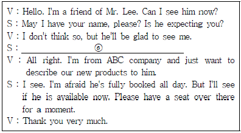
- May I ask what your visit is in regard to?
- May I ask who's calling, please?
- Could you tell me the nature of your business?
- Could you tell me what you want to see him about?
(정답률: 28%)
51. Which of the followings is true to the conversation below?
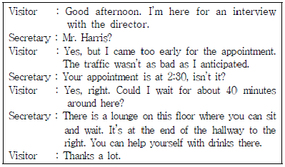
- Mr. Harris arrived at about ten minutes to 2:00 for an interview.
- The secretary will serve coffee to Mr. Harris.
- Mr. Harris arrived late for his appointment due to heavy traffic on the way.
- The director has a plan to hire Mr. Harris for a new project.
(정답률: 38%)
52. Which of the followings is the most appropriate expression for the blank ⓐ?
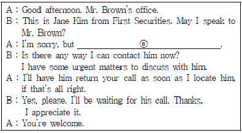
- He's with a client and asked not to be disturbed unless it's urgent.
- He has an urgent matter to discuss with you.
- He has been expecting your call.
- He's out of town on business.
(정답률: 46%)
53. According to the following conversation, why did Mr. Anderson make a call to Ms. Hong?
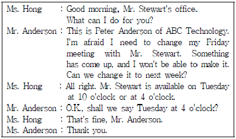
- to reschedule an appointment to next week.
- to confirm an appointment
- to set up an appointment with Ms. Hong.
- to check his appointment
(정답률: 64%)
54. Read the following letter and choose one which is true.
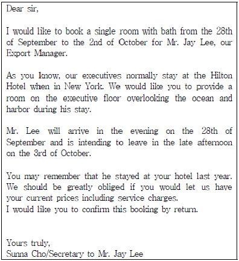
- Ms. Cho is planning to take a business trip to New York.
- Mr. Lee needs the hotel information because he has never visited this place.
- The secretary is making a reservation for her business trip.
- The hotel is supposed to confirm the hotel reservation.
(정답률: 43%)
55. According to the following conversation, which one is not scheduled for Mr. Park?
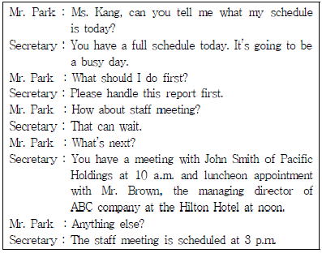
- He is due to participate in a meeting in the morning.
- He will have lunch with the executive of a company.
- He has to report a document to the managing director of ABC company.
- He is scheduled to attend the staff meeting in the afternoon.
(정답률: 35%)
56. Read the following conversation and Choose the one which is not true to the conversation.
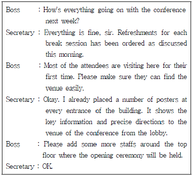
- The boss made an extra instruction to the secretary in this discussion.
- The place where the conference will start is on the top floor of the building.
- The notice on the major gates of the building shows the way to the opening ceremony of the conference.
- More people will be assigned in the lobby to facilitate the conference preparation.
(정답률: 35%)
57. What equipment is necessary to implement the new policy mentioned in the memo below?
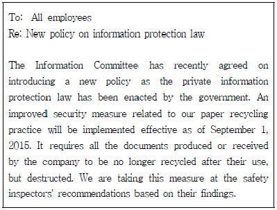
- The paper storage
- The film laminator
- The file cabinet
- The paper shredder
(정답률: 46%)
58. Which of the followings is not appropriate expression?
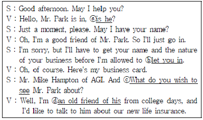
- ⓐ is he
- ⓑ let you in
- ⓒ What do you wish to see
- ⓓ an old friend of his
(정답률: 33%)
59. Choose one which is not true to the given conversation.
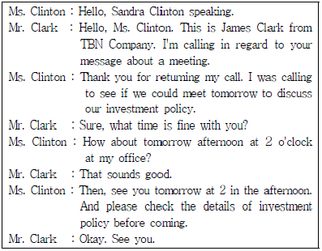
- Mr. Clark is returning Ms. Clinton's call.
- Ms. Clinton and Mr. Clark will have a meeting at Ms. Clinton's office.
- The person who suggested a meeting first is Mr. Clark.
- Mr. Clark should check the investment policy before the meeting tomorrow.
(정답률: 48%)
4과목: 사무정보관리
60. 다음 중 김채영비서의 이메일 사용방법에 대한 설명 중 가장 적절하지 않은 것은?
- 동시에 여러 사람에게 동일한 전자우편을 보낼 수 있는 동보기능을 사용하였다.
- 첨부파일을 포함하여 받은 전자우편을 다른 수신자에게 보내기 위해 bcc를 사용하였다.
- 수취 일시를 지정해 그 일시에 수취인에게 송신되도록 예약하였다.
- 본래의 수신인 이외에 다른 수신인을 지정하여 발신하기 위해 cc를 사용하였다.
(정답률: 56%)
61. 다음의 발신문서 처리방법 중 가장 적절하지 않은 것은?
- 모든 문서는 전자파일로 저장하고 복사본도 반드시 보관한다.
- 비밀을 요하는 문서는 봉투에 넣어서 직접 전달한다.
- 중요우편물의 발신부를 만들어 기록해 둔다.
- 특별 우편물에는 친전이라고 쓰고 반드시 봉한다.
(정답률: 58%)
62. 공공 기관의 김인경비서는 문서의 보관 및 폐기업무를 처리하고 있다. 다음 설명 중 가장 적절하지 않은 것은?
- 보존기간이 지난 문서는 보존여부를 다시 한번 검토하여야 한다.
- 원본이 있는 문서의 사본은 처리 종결 후 수시 폐기한다.
- 문서의 보존 기간에 따라 문서전담부서에서 폐기할 때까지 문서 보존함이나 보존장소에 유지ㆍ관리한다.
- 이용가치가 낮아진 문서를 문서보존창고로 옮기는 것을 '보존'이라고 한다.
(정답률: 49%)
63. 아래 표는 사무관리 자격시험의 검정현황이다. 연도별로 필기 시험의 응시인원, 합격인원, 합격률을 비교하기에 가장 적절한 그래프의 유형은?
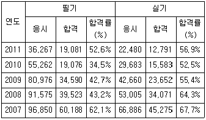
- 연도별 필기시험의 응시인원, 합격인원 비교를 위한 세로 막대와 연도별 합격률 추이를 위한 꺾은선의 혼합형 그래프
- 응시인원대비 합격률에 대한 백분율을 비교할 수 있는 100%기준 누적 세로 막대 그래프
- 연도별 합격률 비교를 위한 거품형 그래프
- 연도별 필기시험의 응시인원, 합격인원, 합격률을 색깔별로 표시한 꺾은선 그래프
(정답률: 52%)
64. 경기전자 모바일사업본부장 비서로 일하고 있는 장채은비서는 제품 발표회 준비를 앞두고 회의장에서 다양한 종류의 휴대폰모형을 직접 보여주면서 프레젠테이션을 진행할 때 사용할 기자재를 선정하고 있다. 다음 중 가장 적합한 기자재는 무엇인가?
- 빔 프로젝터
- OHP
- 실물화상기
- 3D 프린터
(정답률: 61%)
65. 홍보회사에서 근무하는 윤슬아비서의 SNS 활용 및 관리에 대한 설명 중 가장 적절하지 않은 것은?
- 비서는 항상 다양한 소셜미디어에 관심을 가지고 상사 및 회사와 관련된 내용을 주기적으로 모니터링 해야 한다.
- 우리 회사와 팔로워를 맺은 인원, SNS 상에서 다루어지고 있는 주요 내용, 소비자의 관심분야도 파악하고 있어야 한다.
- 경쟁사의 SNS는 관심을 갖지 않아야 우리 회사의 SNS운영을 효율적으로 할 수 있다.
- 사내 직원들이 회사 SNS를 활용하고 홍보할 수 있도록 적극 권장한다.
(정답률: 66%)
66. 방송국에 근무하는 김인현비서의 기밀문서 관리에 관한 설명 중 가장 적절하지 않은 행동은?
- 기밀문서를 관리하는 컴퓨터상의 폴더는 반드시 비밀번호를 설정한다.
- 기밀문서를 필요 이상으로 복사해 두거나 이면지로 사용하지 않도록 한다.
- 처리가 완료되지 못한 문서작업은 긴급한 경우에만 집으로 가져가서 한다.
- 퇴사한 지인으로부터 사내기밀정보에 관한 요청을 받을 경우, 정중히 거절한다.
(정답률: 67%)
67. 외국계 기업의 김민선비서는 고객의 명함을 정리하고 있다. 다음 중 순서가 가장 적절한 것은?
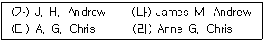
- (나) - (가) - (라) - (다)
- (가) - (나) - (다) - (라)
- (다) - (라) - (가) - (나)
- (라) - (다) - (나) - (가)
(정답률: 40%)
68. 다음은 EDI로 문서를 작성한 예이다. 가장 적절하지 않은 것은?
- 무역회사의 무역주문서 작성
- 의료기관의 국민건강보험 의료비 청구
- 홈쇼핑회사의 물류정보 전송
- 광고회사의 디자인시안수정
(정답률: 48%)
69. 정부투자기업에서 근무하고 있는 문애라 비서가 공문서를 작성하고 있다. 다음 중 공문서 작성시 기안문의 “끝”표시가 가장 적절하지 않은 경우는?
- 문서의 본문 내용의 마지막 글자에서 한 글자 띄우고 '끝'표시를 한다.
- 첨부물이 있을 때에는 첨부의 표시 끝에 1자 뛰우고 '끝'을 표시한다.
- 본문의 내용이 표 형식으로 끝나는 경우 표의 중간까지만 작성한 경우에는 “끝”표시를 하지 않고 마지막으로 작성된 칸의 다음칸에 “이하 빈칸”으로 표시한다.
- 본문의 내용이 표 형식으로 끝나는 경우 표의 마지막 칸까지 작성한 경우 표 아래 오른쪽 끝에 “끝”표시를 한다.
(정답률: 40%)
70. 아래와 같이 비서들이 쾌적한 사무실 환경유지를 위한 다양한 노력을 하고 있다. 이 중 가장 바람직하지 않은 것은?
- 김비서는 사무실이 상당히 좁은 편이라 밝은 색으로 벽면을 처리하였다.
- 민비서는 실내공기정화기능이 뛰어난 산세베리아를 비서실에 놓아두었다.
- 정비서는 높은 조도를 필요로 하는 정밀한 작업을 할 때에는 스탠드를 병행하여 사용하였다.
- 채비서는 먼지가 나지 않도록 모니터를 물걸레로 닦았다.
(정답률: 54%)
71. 다음은 상공에너지의 직무전결표이다. 이에 의거한 문서의 결재 처리가 가장 올바른 경우는?
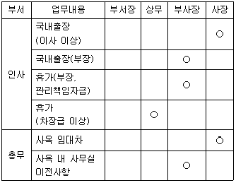
- 상공은행과 지점 임대차계약 체결을 위하여 사장님이 부재중이라 부사장님에게 후결을 받았다.
- 인사부를 6층으로 이전하기 위하여 부사장님이 부재중이라서 상무님에게 전결을 받았다.
- 인사부장의 휴가원처리를 위해서 부사장님에게 전결을 받았다.
- 총괄상무의 제주도 출장을 위해서 사장님에게 전결을 받았다.
(정답률: 55%)
72. 다음 전자문서 정리 절차의 각 단계에 관한 설명 중 가장 적절하지 않은 것은?
- 등록이란 전자문서가 진본으로서 신뢰받을 수 있도록 변형이나 훼손으로부터 보호받으며 필요할 때, 이용 가능한 상태로 정보처리시스템에 저장되어 관리하는 과정이다.
- 생성이란 전자문서를 작성하여 보존하기로 결정하는 과정이다.
- 추적이란 전자문서와 관련되어 발생하는 모든 행위에 대한 내역을 생성, 저장, 관리하는 과정이다.
- 유통이란 조직 내·외부로 전자문서가 송신되는 것을 의미한다.
(정답률: 25%)
73. 다음 중 데이터베이스 관리시스템에 대한 설명으로 가장 적절하지 않은 것은?
- 영문으로 Database Management System이며 약자로 DBMS라고 한다.
- 테이블에 작성되어 저장된 데이터를 이용하여 폼이나 쿼리, 보고서 등의 기능을 이용하여 데이터 관리가 가능하다.
- MS-Access는 개인 사용자용으로 개발된 데이터베이스 관리시스템이다.
- 다수의 컴퓨터사용자가 이용하기 때문에 데이터가 중복되는 오류는 불가피하다.
(정답률: 60%)
74. 한국전자는 IPO를 앞두고 대표이사인 상사가 IR프레젠테이션을 할 예정이여서 상사를 위해 비서가 시각 자료를 작성중이다. 이 중 가장 적절하지 않은 것은?
- 정확한 수치 제공보다는 청중의 감성에 호소할 수 있는 이미지 광고 느낌으로 제작하였다.
- 슬라이드의 마스터 배경을 회사의 로고와 CI를 활용하여 만들었다.
- 지루함을 피하고 흥미를 유발하기 위하여 화면전환효과를 적절하게 사용하였다.
- 회사의 주요서비스와 제품에 관해 설명하기 위한 flash파일을 만들어서 삽입하였다.
(정답률: 68%)
75. 다음 중 업무 관련 정보 수집을 위해 신문을 이용하는 비서의 행동에 대한 설명으로 가장 옳지 않은 것은?
- 장비서는 인물 동정란을 보고 상사 지인들의 승진, 영전, 부고를 찾아본다.
- 강비서는 효과적인 정보수집을 위해 모든 기사를 빠짐없이 꼼꼼히 읽는다.
- 남비서는 주요 기사를 놓치지 않기 위해 상사의 정보요구에 적합한 2,3종의 신문을 선별하여 조사한다.
- 최비서는 큰 제목을 기준으로 훑어보아 중요기사를 파악한 후 필요한 기사를 찾아 읽는다.
(정답률: 53%)
76. 다음에 설명된 개념이 올바르게 짝지어지지 않은 것은?
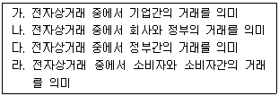
- 가 – B2B
- 나 – B2E
- 다 – G2G
- 라 - C2C
(정답률: 65%)
77. 다음 중 편지병합에 대한 설명으로 가장 적절하지 않은 것은?
- 편지병합은 동일한 내용의 편지를 받는 사람의 정보만 달리 하여 여러 명에게 보낼 때 사용하는 기능이다.
- 편지병합을 위해서는 두 개의 파일, 즉 내용 파일과 데이터 파일이 필요하다.
- 데이터 파일은 기존 데이터 파일을 편집하여 사용하거나 새로운 데이터 파일을 만들어 사용할 수도 있다.
- 사용 가능한 데이터 파일로는 엑세스, 아웃룩, 엑셀, 파워포인트 파일 등을 사용할 수있다.
(정답률: 50%)
78. 다음 중 수신문서의 처리방법에 대한 설명으로 가장 적절한 것은?
- 팀비서인 박비서는 접수된 모든 우편물을 개봉하여 내용을 꼼꼼히 확인한 후 업무 담당자에게 전달한다.
- 팀비서인 정비서는 수신된 우편물의 봉투 여백에 접수 일부인(date stamp)을 찍어 수신 날짜를 표기해 둔다.
- 상사로부터 우편물 개봉을 허가받은 김비서는 우편물을 개봉한 후 크기에 따라 보기 좋게 정리하여 상사에게 드린다.
- 이비서는 상사의 요청이 없어도 관련 문서 사본을 첨부하여 상사에게 함께 드린다.
(정답률: 19%)
79. 다음 기사에 대한 설명 중 가장 올바르지 않은 것은?
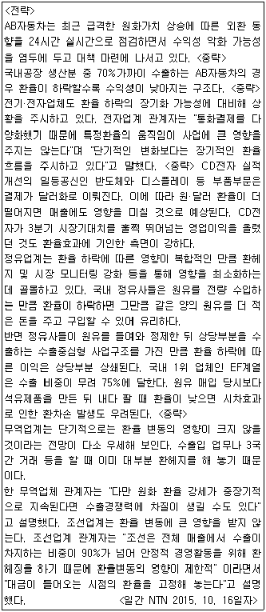
- 정유업계는 원유매입당시보다 수출할 때 환율이 낮으면 환차손 발생이 우려된다.
- 무역업계나 조선업계처럼 환헤지를 해놓으면 환율변동에 크게 영향을 받지 않는다.
- AB자동차는 달러 가치가 올라감에 따라서 수익성이 낮아지는 구조이다.
- CD전자가 3분기 어닝 서프라이즈를 기록한 것은 원·달러환율이 높았기 때문이기도
(정답률: 44%)